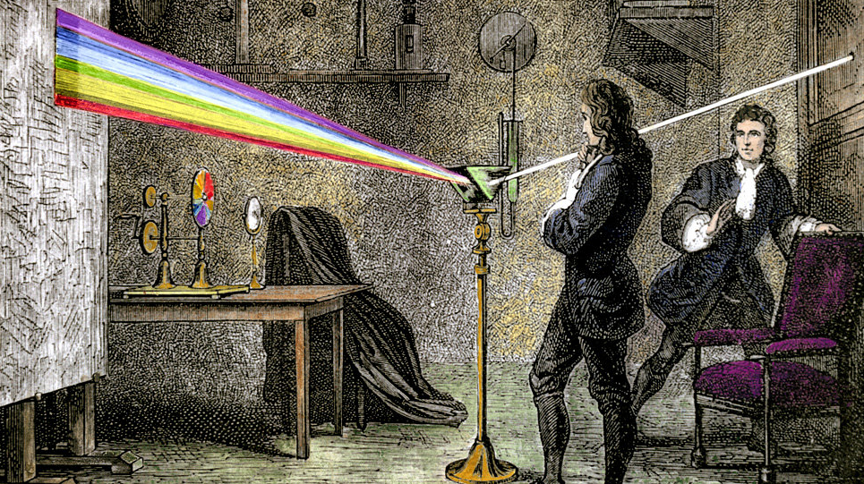
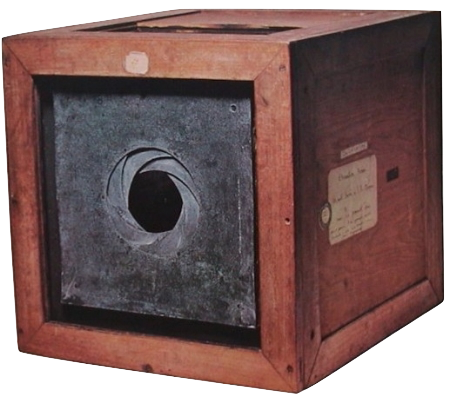
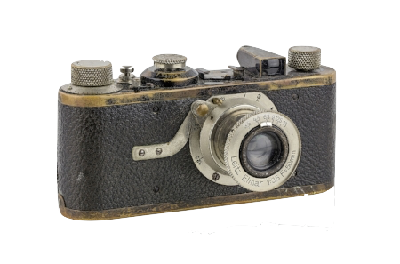
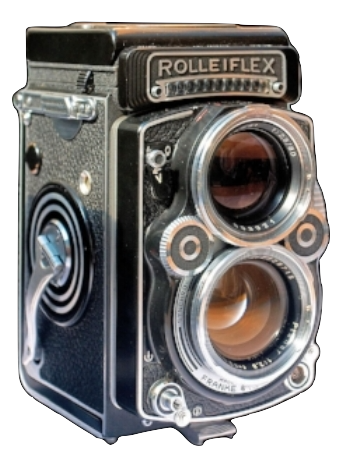
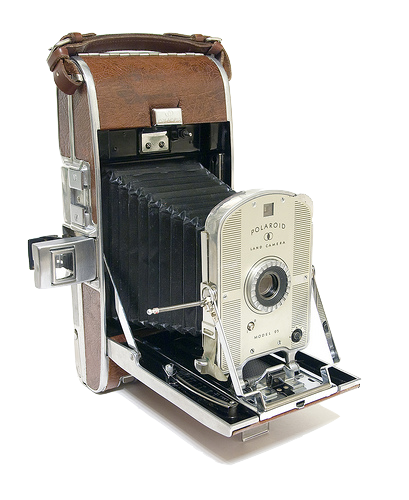
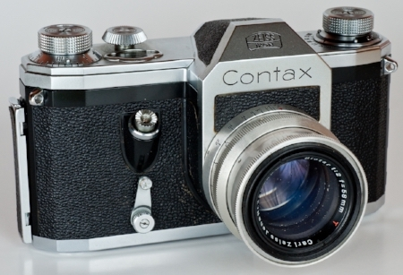
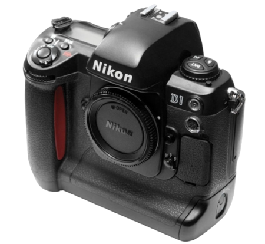
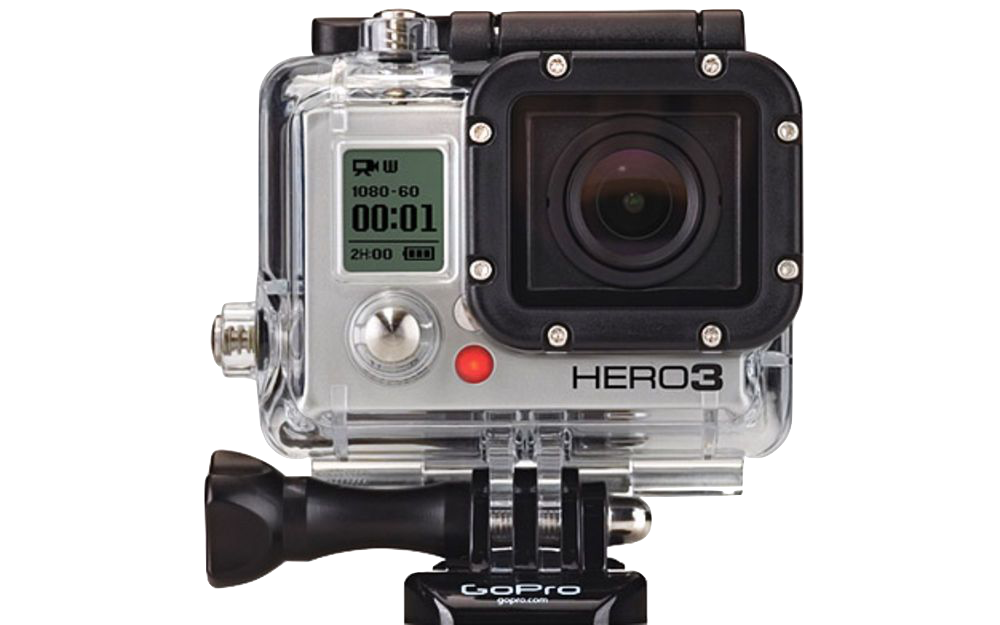
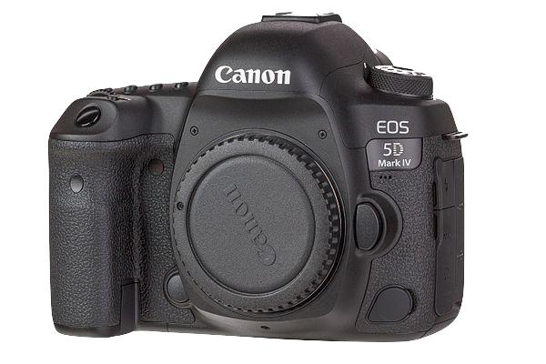

Brief Timeline of Photography
In 1664 Sir Isaac Newton discovers that white light is composed of different colors by refracting white light off a prism.

In 1685 The vision of a box form of a Camera that was portable and small was was envisioned by Johann Zahn, though it would be nearly 150 years before technology was able to bring his vision to life.

In 1884 - 1924 The camera went into production at the Leitz factory in Germany. It was called the Leica from the initials of "Leitz Camera."

In 1926 Under water photography was born shown by this image of a Hogfish Photographed by Dr. William Longley and National Geographic staff photographer Charles Martin
In 1929 a major step forward to mass marketing of the TLR (twin-lens reflex) came with the Rolliecord and then rollieflex, developed by Franke & Heidecke in Germany.

In 1948 An entirely new type of camera is introduced– the Polaroid Model 95. It was the world's first viable instant-picture camera.

In 1949 the first new SLRS camera: The Contax S

In 1991 The Nikon D1 was the first DSLR body designed from scratch by a single manufacturer. It competely changed the game for SLRS at that time- dropping the price of a digital SLR by more than half.

2007 GoPro manufatured a small handheld camera that allows in action pact events and activities

In the same year that the GoPro was released a company called Apple released their first mobile phone that had a HD camera. The iPhone
In 2008 Polaroid announces it is discontinuing the production of all instant film products, citing the rise of digital imaging technology.

In 2016 The Canon 5d Mark IV was relased as a whopping 30.1 megapixels full frame digital single lens-reflex with the ability to shoot video in 4k.
